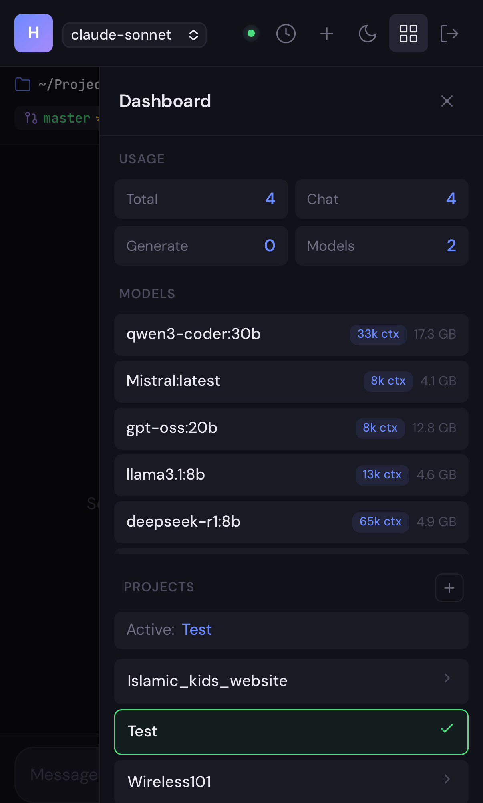
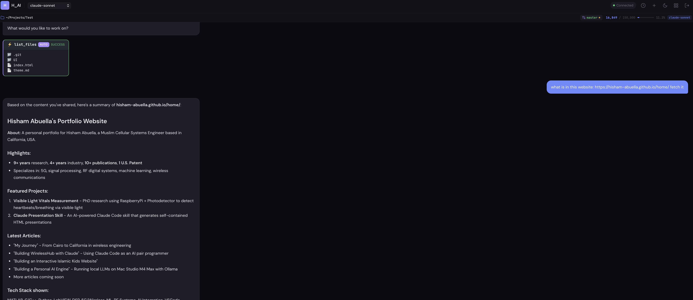
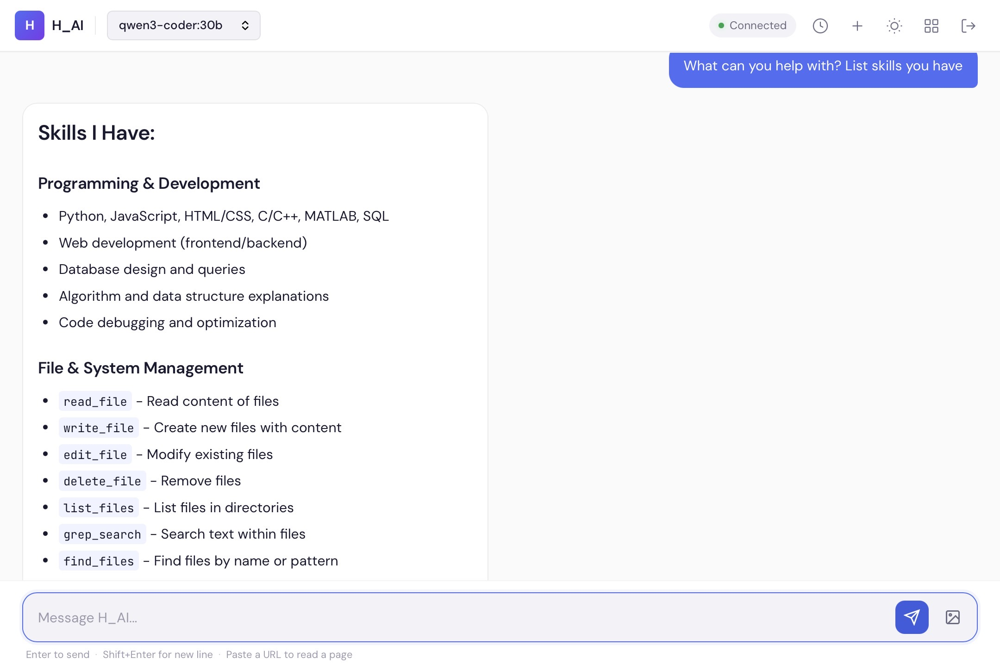

I got tired of depending on cloud APIs for everything. The latency, the cost, the privacy concerns — I wanted my own AI that runs locally, responds instantly, and stays completely private. So I built one. A personal AI engine running on my Mac Studio M4 Max, accessible from any device in my house through a custom web interface I call H_AI.
This project is still a work in progress, but it's already my daily driver for coding, writing, and research.
The Hardware
Mac Studio M4 Max
The M4 Max with 64 GB of unified memory is a sweet spot for running local LLMs. The unified memory architecture means the GPU and CPU share the same memory pool — no copying data between RAM and VRAM. Models that would need a dedicated GPU with 24+ GB of VRAM on a PC just run natively here. Ollama handles model loading and inference, and it's remarkably fast on Apple Silicon.
The Models
With 64 GB of memory, I can run a wide range of models locally. Here's what I currently have available:
| Model | Context Window | Best For |
|---|---|---|
| DeepSeek-R1 | ~50,000 words | Reasoning, complex analysis |
| Qwen3-Coder | ~25,000 words | Code generation, debugging |
| Llama 3.1 8B | ~10,000 words | General tasks, fast responses |
| Mistral | ~6,000 words | Quick queries, lightweight tasks |
I can switch between models on the fly from the web interface. Need deep reasoning? Switch to DeepSeek. Quick code fix? Llama is faster. The model selector is right in the header — one click and I'm on a different model mid-conversation.

The Web Interface
The heart of the project is the webapp. It's a custom-built chat interface that runs on FastAPI with a vanilla HTML/CSS/JS frontend. I access it from my laptop, phone, or tablet — any device on my home network.

The Skills System
This is where it gets interesting. The AI isn't just a chatbot — it can take actions. I built a skills system with 22 tools that the AI can invoke: reading and writing files, running shell commands, searching codebases with grep, managing git, fetching web pages, and more.
The AI analyzes each request and recommends the right tool when confidence is above 90%. Dangerous operations like file deletion or git commits require explicit confirmation. It's like having a junior developer who can actually touch the filesystem — but asks before doing anything risky.

Security
Since this runs on my home network and is accessible from any device, security matters. The server uses API key authentication with SHA-256 hashing and constant-time comparison to prevent timing attacks. There's rate limiting at 60 requests per minute. And SSL/HTTPS support for encrypted connections. The skills system has three confirmation levels — none, normal, and dangerous — so the AI can't accidentally rm -rf anything.
The Architecture
The stack is intentionally simple:
Backend: FastAPI with async streaming, Pydantic for validation, file-based JSON storage for sessions and logs. No database needed — everything persists as JSON files on disk.
Frontend: Vanilla HTML, CSS, and JavaScript. Marked.js for markdown rendering, Highlight.js for syntax highlighting. No React, no build tools. It's a PWA so it can be installed on any device's home screen.
AI Runtime: Ollama handles model loading and inference locally. I also have Claude API integration for when I need a cloud model's capabilities. The interface switches seamlessly between local and cloud models.
What's Next
This is still a work in progress. Here's what I'm planning:
Voice input and output — talk to the AI from across the room and hear responses spoken back. Remote access via Tailscale so I can use it outside my home network. Multi-model conversations where different models collaborate on the same problem. Better analytics to track usage patterns and model performance. And templates for common prompts I use repeatedly.
The foundation is solid. Every week I add something new, and every week it becomes more useful. The dream is a fully autonomous AI assistant that knows my codebase, manages my projects, and runs entirely on hardware I own.
No cloud dependency. No subscription fees. No data leaving my network. Just raw compute, good software, and complete ownership.